This application allows users to create a profile which will include their
education, skills and interests as well as any other extracurricular skills they may
have. The system then matches students, faculty and staff based on the
information found on the profile as well as a project they would like to collaborate on.
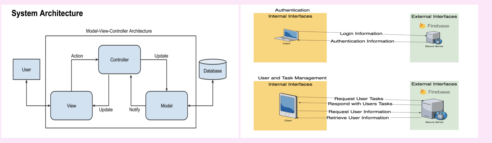
We use the client-server model. This model allows us to store user data and task data in Firebase. The information will be provided according to commands from the controller and displayed in the view. We can utilize Firebase embedded authorization and simple search logic.
All the data and user information for our app will be hosted externally by the Firebase system. All the interfaces and guy components will be hosted locally on the user’s client.
Authentication
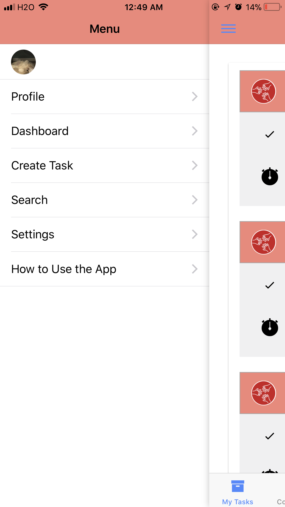
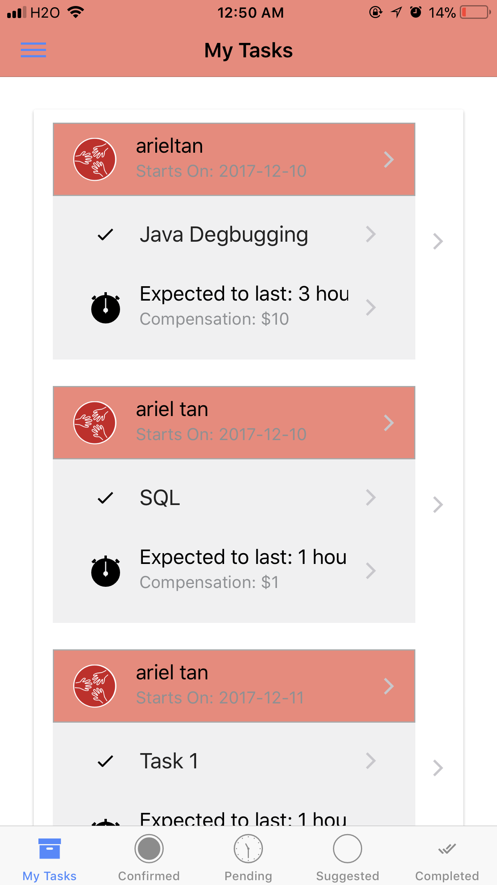
User can slide to the right to see the side bar that can navigate to any listed page. My task tab contains a list of your current active tasks
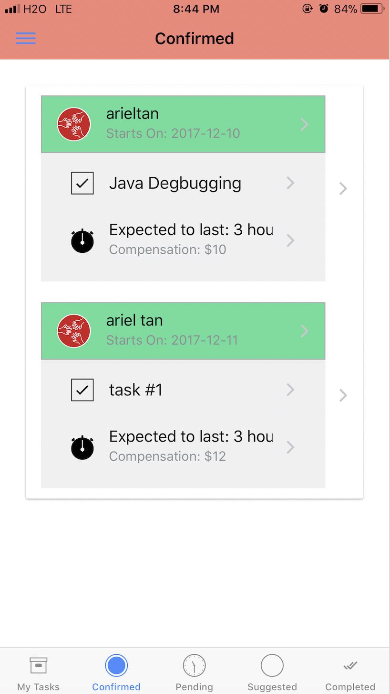
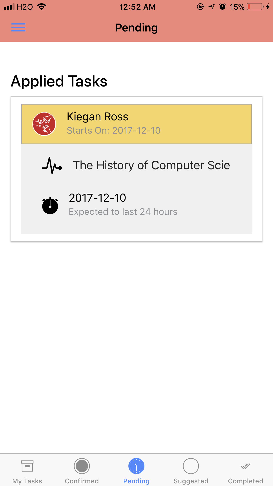
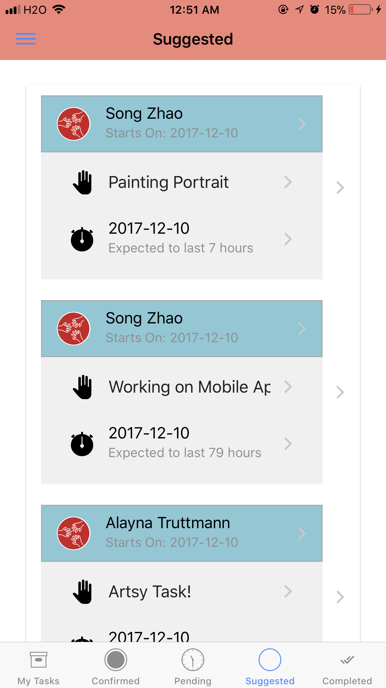
Confirmed task tab contains your requested tasks with helper matched. (mutual agreement) Pending task tab contains your requested tasks without being agreed by task owner yet. Suggested task tab contains possible tasks which you would be able to complete as a helper
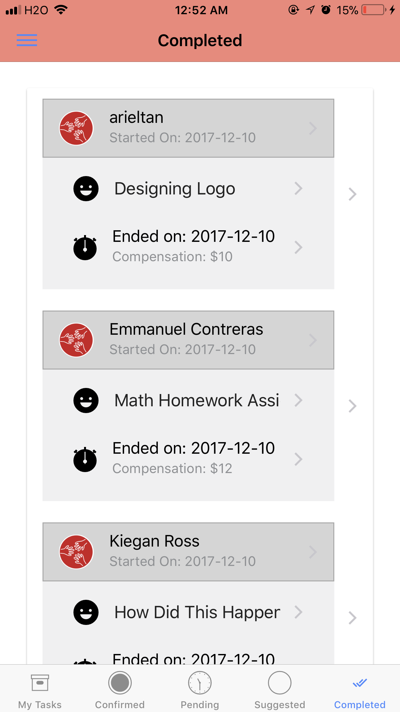
Completed task tab contains a history of tasks you have requested and have been completed
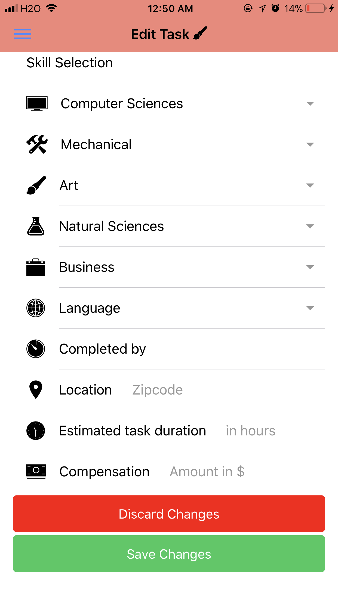
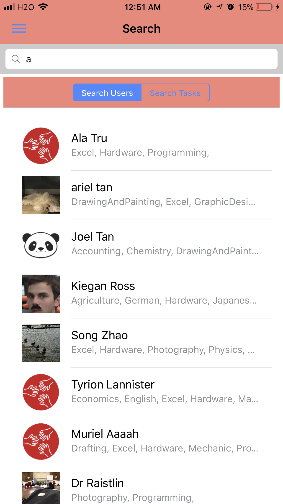
If you are the owner of a task, you will be able to edit your task at any time. A search function is also implemented in order to help user find their known helpers or tasks
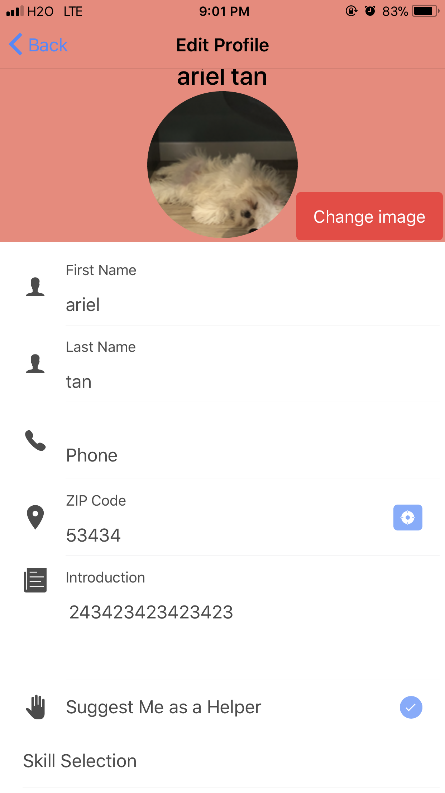
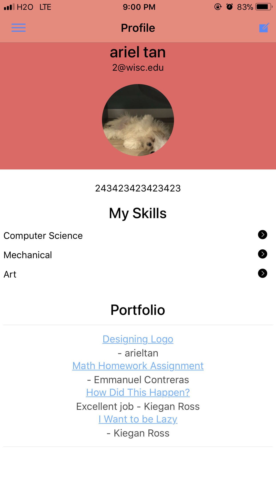
You can edit your profile, and we will generate a portfolio based on your completed tasks.
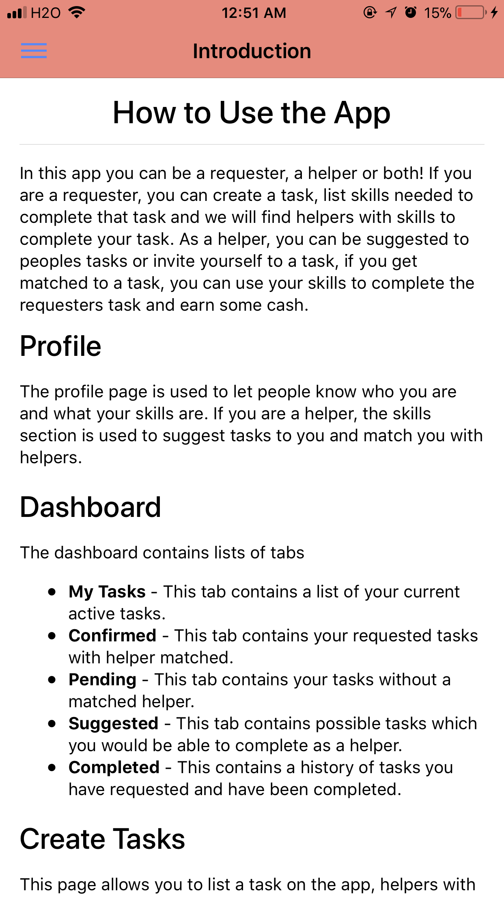
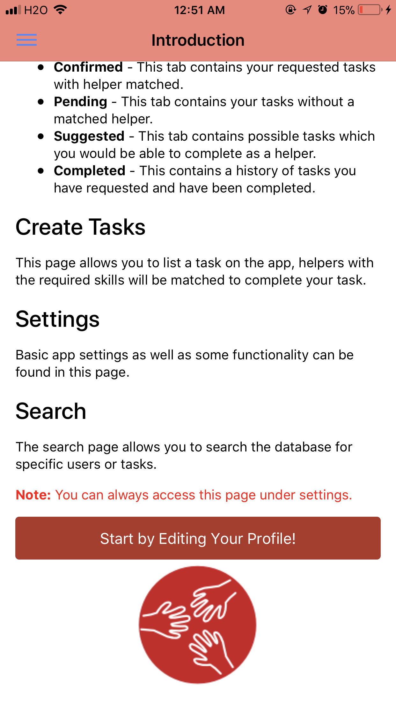
If users still confused about those functions above, an intro page is always there to help!
Javascript Project : Random Moving Balls...
Javascript Project : Galaxy
Starry Night
Try different style of stars
Star type 1
Star type 2
Star type 3
Star type 4
Size of the Star
Number of the Star
Speed